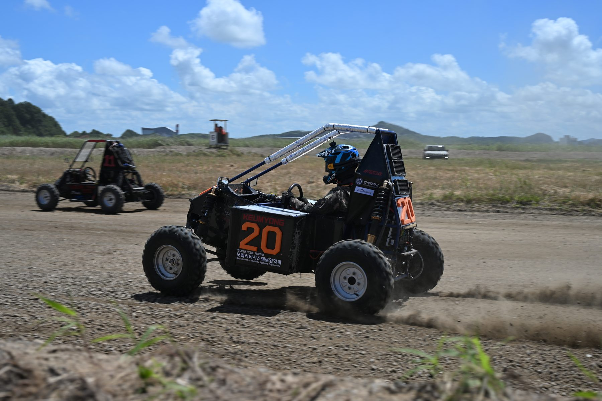
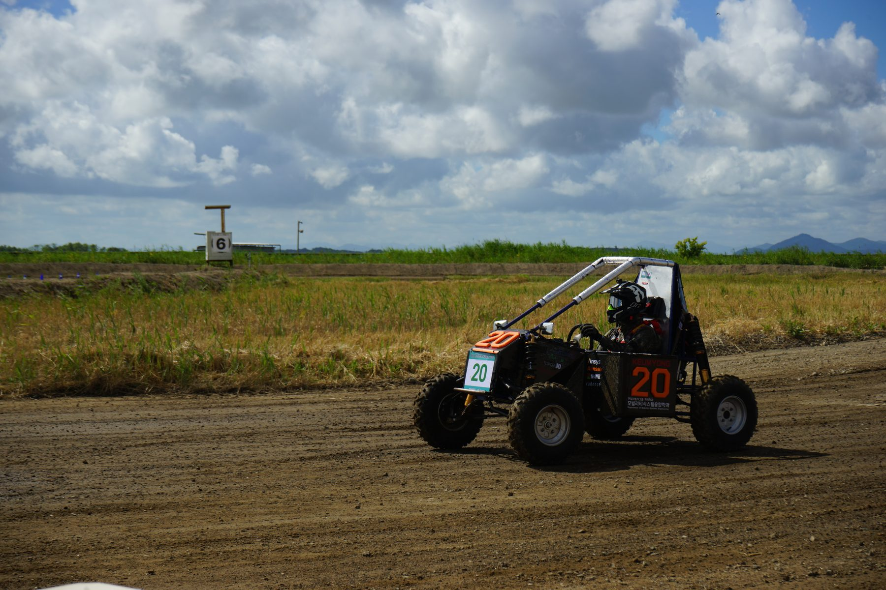
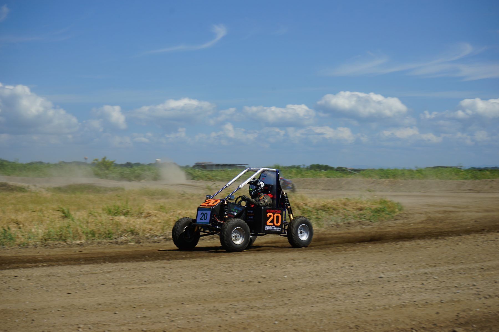
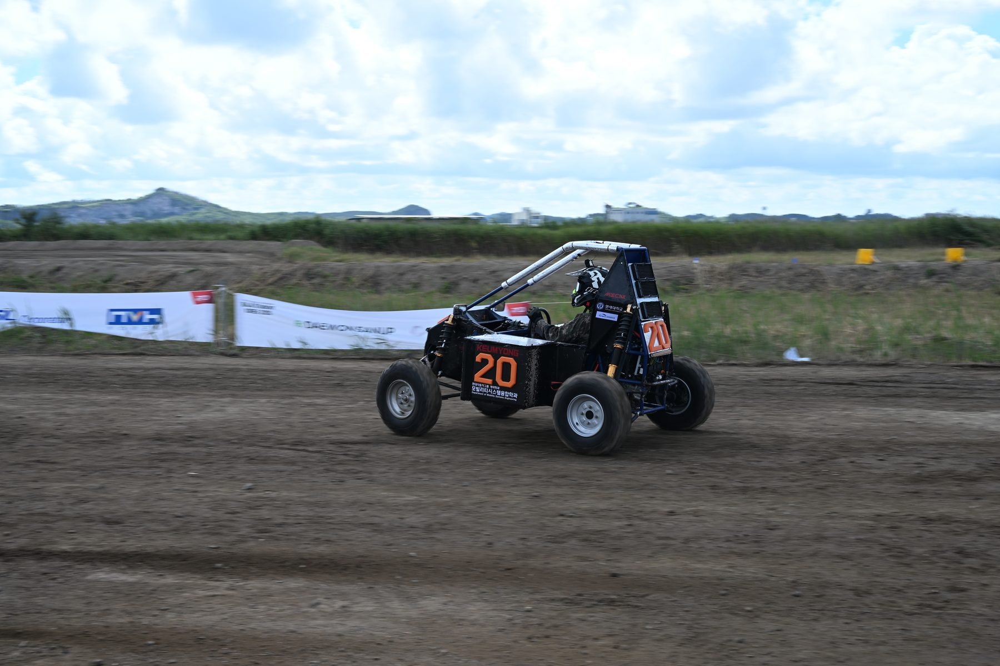
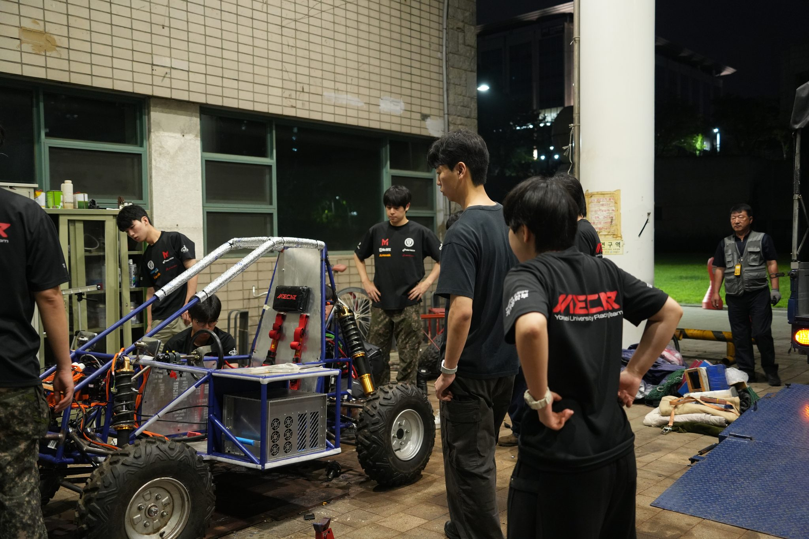

MECar gallery
만들고, 달린 순간
출발 전 점검부터 코스를 달리는 모습까지, 2026년 Baja 대회 현장을 사진으로 모았습니다.
2026 / KSAE Baja
코스 위에서
20번 차량이 비포장 코스를 달렸습니다. 먼지와 진동 속에서 설계를 다시 확인한 날입니다.





2026 / Team
대회 현장의 팀원들
팀원들은 출발 전 차량을 점검하고, 주행 뒤에는 상태와 기록을 확인했습니다.



2024 / Archive
이전의 Baja
지금의 차량보다 앞서 달린 차와 그해 대회에 함께한 팀입니다.